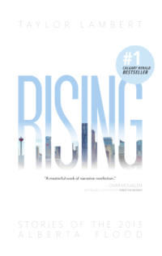

books

Darwin’s Moving
NeWest Press, 2017
• Winner, 2018 W.O. Mitchell Prize
• Shortlisted, 2018 Alberta Book Publishing Awards
An insider's memoir of the residential moving industry, the complex characters who do the difficult work, and the class divides that separate them from their customers. This is a glimpse into the Other Calgary, the less celebrated parts of the city populated by transient men and women struggling to survive in a boomtown’s shadow.
“[A] coolly intelligent piece of social anthropology... The ghost of Orwell approves.”
winnipeg free press
“...an illuminating trip to a realm of which we're only dimly aware.”
toronto star
“Lambert is particularly attentive to his subjects’ limited life choices and paints them as complex people...”
globe
&
mail
“With a clear-eyed Lambert behind the wheel, Darwin’s Moving gives you a full tour of the class divide bubbling up through a rapidly suburbanizing city. In compassionate and concise prose, Lambert delves into the battered histories of the men around him, revealing stories full of joy, rage, fear, and abandonment.”
andrew f. sullivan,
author of waste

Roots
Extracted Tales From a
Century of Dentistry at the U of A
UAlberta School of Dentistry, 2017
Commissioned for the centennial of the School of Dentistry, this deep-dive narrative history into an unlikely subject uncovers a wealth of surprising and remarkable stories even the most fervent dentophobe can sink their teeth into.
“ This is a remarkable read that brings to life the centennial history of an Edmonton institution.”
don iveson,
mayor of edmonton

Rising
Stories From the 2013 Alberta Flood
independent, 2014
• No. 1 Calgary Herald bestseller
One of the largest natural disasters in Canadian history as never seen before: through the eyes of the people it directly affected, told in a literary narrative style through multiple perspectives.
“A masterful work of narrative nonfiction.”
omar mouallem,
author of praying to the west
“Old-fashioned feet-on-the-street journalism.”
calgary herald
“If you were there, you'll remember. If you weren't there, you'll understand. Lambert carefully reconstructs the chaos, anxiety, tragedies and everyman heroisms from those remarkable summer days.”
jason markusoff,
maclean’s